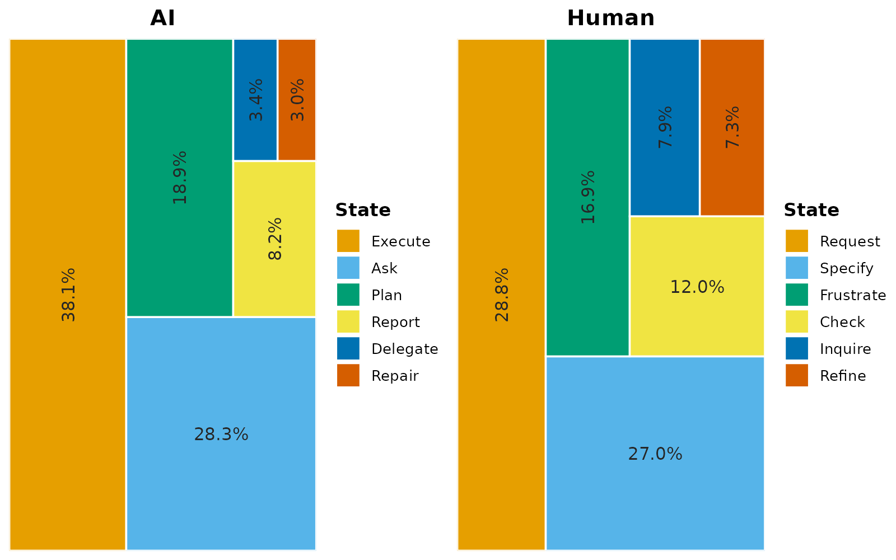
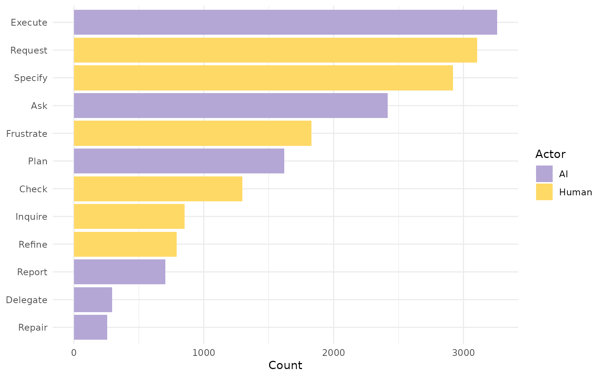
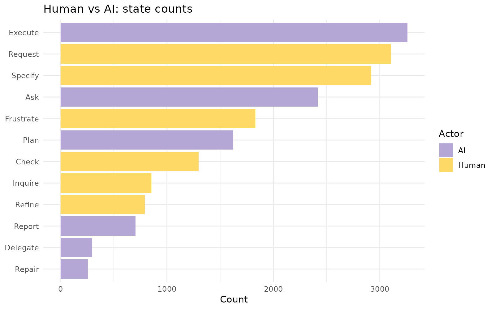
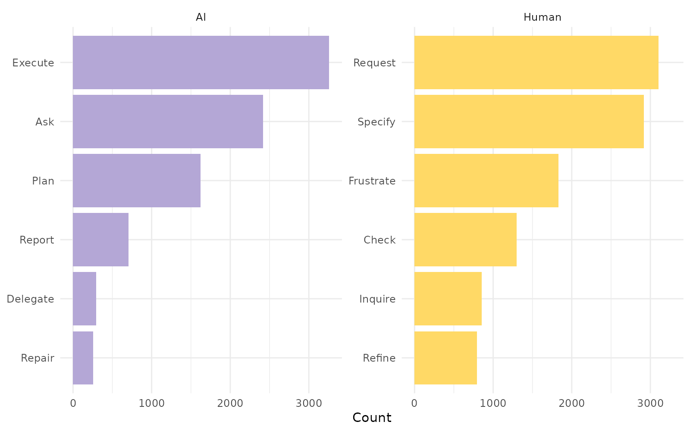
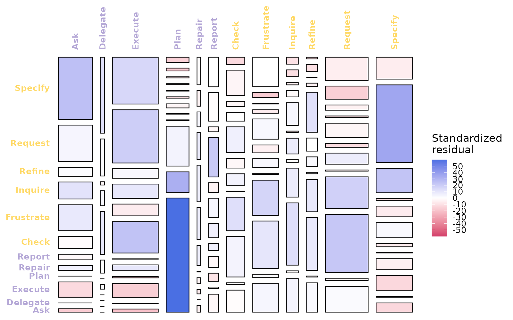
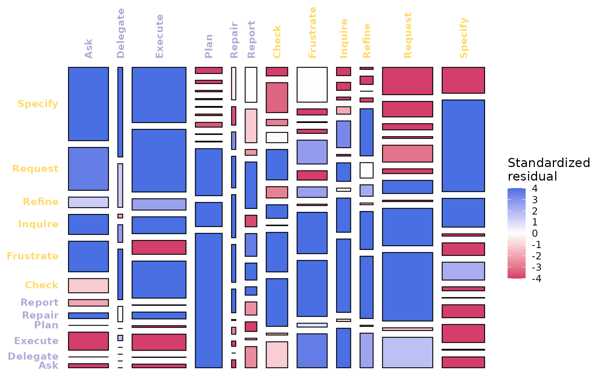
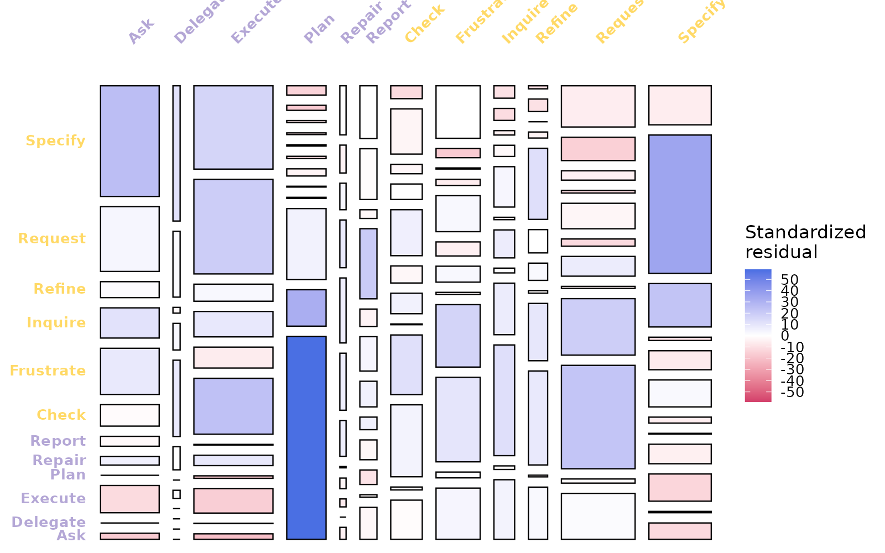

State frequencies and chi-square mosaics
Source:vignettes/frequencies-and-mosaic.Rmd
frequencies-and-mosaic.RmdIn this vignette, we look at additional summary functions and
visualizations in htna. We will use two networks
constructed from the bundled human_ai corpus (Human + AI
events tagged by actor_type; see ?human_ai).
The frequency family operates on either, but the mosaic family requires
an integer-weighted network because the chi-square test acts on counts;
this is the network produced under
method = "frequency".
library(htna)
data(human_ai)
net <- build_htna(human_ai, actor_type = "actor_type")
net_freq <- build_htna(human_ai, actor_type = "actor_type",
method = "frequency")Marginal state distributions
Tabular summary
frequencies_htna() returns the per-actor marginal state
distribution as a data frame with one row per (actor_type,
state) pair. Columns are: actor type (group),
state, count, and within-network proportion. The table is the data
underlying every chart in this section.
frequencies_htna(net)
#> group state count proportion
#> 1 AI Execute 3258 0.38100807
#> 2 Human Request 3104 0.28751389
#> 3 Human Specify 2920 0.27047054
#> 4 AI Ask 2416 0.28254005
#> 5 Human Frustrate 1829 0.16941460
#> 6 AI Plan 1620 0.18945153
#> 7 Human Check 1298 0.12022971
#> 8 Human Inquire 853 0.07901074
#> 9 Human Refine 792 0.07336050
#> 10 AI Report 705 0.08244650
#> 11 AI Delegate 295 0.03449889
#> 12 AI Repair 257 0.03005496Graphical summary: plot_frequencies_htna()
plot_frequencies_htna() renders the same marginal
distribution in three layouts. Each layout encodes the same data but is
optimised for a different reading task.
Treemap (view = "treemap", default)
Each panel corresponds to one actor; tile area within a panel encodes the within-network proportion of the corresponding state. The layout is space-efficient and allows the full state vocabulary to be displayed simultaneously.

Combined bars (view = "bars")
The bars layout collapses both actor types onto a single y-axis, sorts the states by total count, and colours the bars by actor. This layout is appropriate when the analytic task is direct numerical comparison across the full vocabulary.
plot_frequencies_htna(net, view = "bars")
The bars layout returns a ggplot object, permitting modification through standard ggplot composition operators:
plot_frequencies_htna(net, view = "bars") +
ggplot2::labs(title = "Human vs AI: state counts")
Per-actor faceted bars (view = "facet")
The faceted layout assigns each actor its own panel with an independent y-axis. This is appropriate when the actors differ substantially in event volume, since a shared scale would compress the lower-volume actor’s bars beyond legibility.
plot_frequencies_htna(net, view = "facet")
Joint transition distribution: chi-square mosaic
mosaic_plot_htna() displays the joint distribution of
(source, target) transitions as a chi-square mosaic. Each
cell of the transition matrix is rendered as a rectangle whose area is
proportional to the joint share of that transition; cell colour encodes
the standardised residual against an independence model. Cells with
positive residuals (over-represented relative to independence) are
coloured blue; cells with negative residuals (under-represented) are
coloured red; cells whose observed value matches the independence
prediction are white.
The chi-square test requires integer counts, hence the requirement for a frequency-method network.
Default residuals (permutation-based)
The default residual estimator is permutation-based, with
n_perm = 500 iterations. Permutation residuals are
appropriate when cell counts are sparse or when the chi-square
asymptotic approximation is not trusted; the trade-off is computation
time.
mosaic_plot_htna(net_freq, seed = 1L)Cells with strong positive residuals identify transitions that characterise the process beyond what would be expected by chance; cells with strong negative residuals identify transitions that are systematically suppressed.
Asymptotic residuals (residuals = "asymptotic")
The closed-form chi-square standardised residual estimator
(chisq.test()$stdres) is faster and is the convention used
by tna and vcd. It is appropriate when cell
counts are large enough for the asymptotic approximation to hold.
mosaic_plot_htna(net_freq, residuals = "asymptotic")
For htna corpora of typical size (hundreds of sessions, hundreds to thousands of transitions per cell), permutation and asymptotic residuals agree closely.
Colour-scale clipping (range = c(-4, 4))
By default the colour scale is calibrated to the maximum absolute residual in the matrix. A single extreme cell can therefore desaturate the remainder of the chart. Clipping the range to a fixed interval preserves contrast across the matrix and supports comparison of mosaics across networks.
mosaic_plot_htna(net_freq, range = c(-4, 4), seed = 1L)
A range of ±4 is conventional in mosaic displays; residuals beyond the range saturate to the most intense colour.
Axis-label rotation (top_angle,
left_angle)
For matrices with long state names or large vocabularies, axis labels
may collide. The top_angle and left_angle
arguments rotate the labels for legibility.
mosaic_plot_htna(net_freq, top_angle = 45, left_angle = 0, seed = 1L)